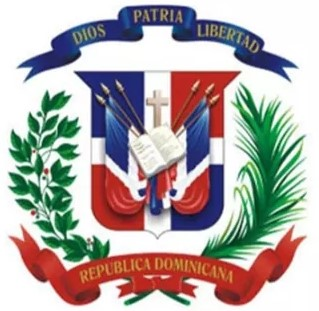

 Subir Foto
Dise�ado con CSS
por
Ronald P. Nu�ez
Cedula: 130-0000559-8
Telefono/WhatsApp: 809-428-9055
Correo Electronico: Ronaldpnunez@gmail.com
Direccion: C/Dr. Feris Olivero N� 100, El Pe�on, Barahona..
-Desarrollo de Paginas Web con C# y MVC : Patrocinados por: MECYST, Republica Digital, Uasd.
-Dise�o Web con HTML, CSS Y JAVA SCRIP : Patrocinados por: MECYST, Republica Digital, Uasd.
Manejador de Paquetes de Ofina y Windows : Escuela Vocacional de la PN. y las FF.AA
-Tecnico Digitador: Escuela Vocacional de la PN. y las FF.AA
-Servicio al Cliente : INFOTEP
-Crimenes y Delitos de Alta Tecnologia: Universidad Catolica Tecnologica de Barahona
-Ciber Seguridad: Ciudadania Digital
-Ciber Bartender: INFOTEP
-Conocimientos de Programacion: Visual Studio, C#
-Conocimientos basicos en base de datos:<>/b Sql Server.
-Conocimientos basicos desarrollo Web: C#.
-Digitador: Liceo Secundario El Pe�on
-Servicio al Cliente: Centro de Internet y Telecomunicaciones (Paredes Comunicaciones)
-Promotor de Claro: (Raul Comunicaciones)
-Soporte Tecnico: Elecciones 2016 : JCE
- Licdo. Jose Valentin Valdez------- Contacto: 809-864-8303